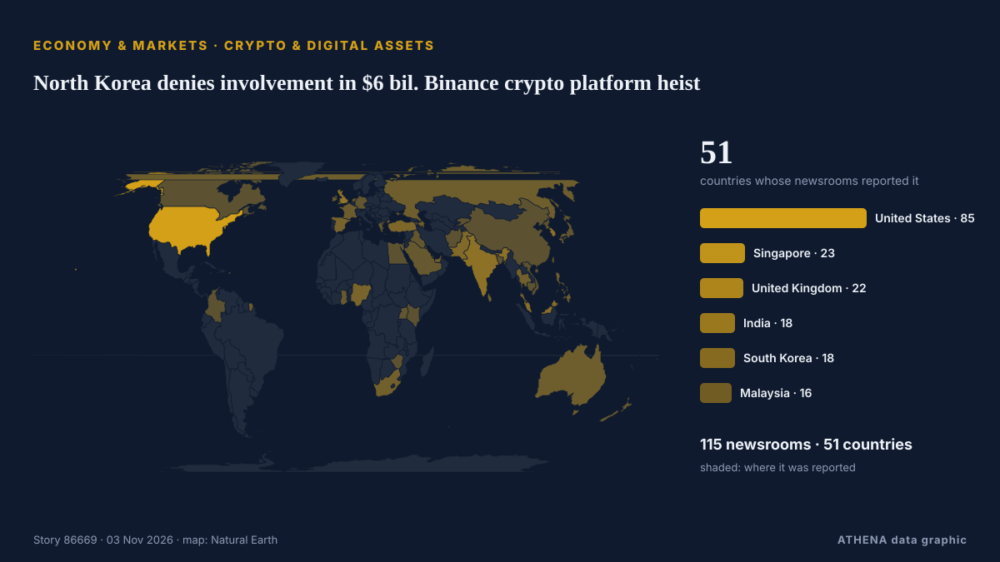

Экономика, финансы и рынки
СпонсорПри поддержке  Cybernetics and Artificial Intelligence Lab Welcome to the Cybernetics and Artificial Intelligence Laboratory, established at the Department of Business Administration of the National and Kapodistrian University of Athens. The lab is headed by Professor Dimitrios Thomakos. The lab aims to do research that can be published in top venues. Our research uses tools and methods of Artificial Intelligence, and lies in the following areas: - Forecasting - Decision making - Cyber security - Finance We are always looking forward to collaborating with exceptional students!
Cybernetics and Artificial Intelligence Lab Welcome to the Cybernetics and Artificial Intelligence Laboratory, established at the Department of Business Administration of the National and Kapodistrian University of Athens. The lab is headed by Professor Dimitrios Thomakos. The lab aims to do research that can be published in top venues. Our research uses tools and methods of Artificial Intelligence, and lies in the following areas: - Forecasting - Decision making - Cyber security - Finance We are always looking forward to collaborating with exceptional students!
Заголовки приводятся на английском языке, как они были опубликованы.
Монитор рынков - официальные данные
Куда движутся официальные рыночные показатели - рост, снижение или без изменений - с последним официальным значением и его датой, а также рыночные новости, проверенные ATHENA. Официальные данные, а не котировки в реальном времени.
Энергетика
| 1 день | 1 неделя | 1 месяц | Официальное значение | |
|---|---|---|---|---|
| Brent crude | ▼ | ▲ | ▲ | $123,10/bblОфициальные данные от 27 окт. 2026 |
| WTI crude | ▼ | ▼ | ▲ | $103,37/bblОфициальные данные от 27 окт. 2026 |
| US natural gas (Henry Hub) | ▲ | ▼ | ▼ | Необычное движение $2,76/MMBtuОфициальные данные от 27 окт. 2026 |
| European natural gas (1 месяц · 3 месяца · 12 месяцев)(1М · 3М · 12М) | ▲ | ▲ | ▲ | $25,49/MMBtuОфициальные данные от 1 сент. 2026 |
| Coal (Australia) (1 месяц · 3 месяца · 12 месяцев)(1М · 3М · 12М) | ▲ | ▲ | ▲ | $153,84/tОфициальные данные от 1 сент. 2026 |
Продовольствие
| 1 месяц | 3 месяца | 12 месяцев | Официальное значение | |
|---|---|---|---|---|
| Wheat | ▲ | ▲ | ▲ | $246,85/tОфициальные данные от 1 сент. 2026 |
Фондовые рынки США
| 1 день | 1 неделя | 1 месяц | Официальное значение | |
|---|---|---|---|---|
| S&P 500 | ▼ | ▼ | ▼ | Необычное движение Только направление (индекс © Cboe)Официальные данные от 30 окт. 2026 |
| Nasdaq Composite | ▼ | ▼ | ▼ | Только направление (индекс © Cboe)Официальные данные от 2 нояб. 2026 |
Ставки, риск и доллар
| 1 день | 1 неделя | 1 месяц | Официальное значение | |
|---|---|---|---|---|
| US 10-year Treasury yield | ▼ | ▼ | ▼ | 4,94 %Официальные данные от 30 окт. 2026 |
| Market volatility (VIX) | ▲ | ▼ | ▲ | Только направление (индекс © Cboe)Официальные данные от 30 окт. 2026 |
| US dollar, broad index | ▬ | ▲ | ▲ | 121,67Официальные данные от 30 окт. 2026 |
Евро к другим валютам
| 1 день | 1 неделя | 1 месяц | Официальное значение | |
|---|---|---|---|---|
| EUR/USD | ▲ | ▲ | ▬ | 1,1216 USDОфициальные данные от 2 нояб. 2026 |
| EUR/GBP | ▲ | ▼ | ▼ | 0,8358 GBPОфициальные данные от 2 нояб. 2026 |
| EUR/CHF | ▬ | ▼ | ▼ | 0,9193 CHFОфициальные данные от 2 нояб. 2026 |
| EUR/JPY | ▲ | ▲ | ▬ | 177,10 JPYОфициальные данные от 2 нояб. 2026 |
| EUR/CNY | ▲ | ▬ | ▼ | 7,4567 CNYОфициальные данные от 2 нояб. 2026 |
| EUR/TRY | ▲ | ▲ | ▲ | 56,044 TRYОфициальные данные от 2 нояб. 2026 |
| EUR/NOK | ▲ | ▼ | ▼ | 10,3775 NOKОфициальные данные от 2 нояб. 2026 |
Источники: Управление энергетической информации США (нефть, газ США), МВФ (европейский газ, уголь, пшеница), Минфин и ФРС США (доходность 10-летних облигаций, индекс доллара) и Cboe (VIX), S&P Dow Jones Indices (S&P 500), Nasdaq (Nasdaq Composite), через FRED (ФРБ Сент-Луиса); референсные курсы евро © Европейский центральный банк. Значения - последние официальные данные с датой, а не котировки в реальном времени. Направления рассчитывает ATHENA.
Криптовалюты, ETF и акции в новостях
- North Korea denies involvement in $6 bil. Binance crypto platform heist Риск 3.7 3 нояб.
- Greenback pulls back ahead of US midterms; Bitcoin stabilises after crypto heist Риск 1.8 3 нояб.
- Taoiseach flags 'big threat' weeks after households told to stock up on food and water Риск 0.0 3 нояб.
- Anthropic Reports $17 Billion Quarterly Revenue Ahead of IPO Риск 2.1 3 нояб.
- (URGENT) Seoul shares dip over 3 pct amid escalating AI woes Риск 4.7 3 нояб.
- Bitcoin risks drop below $76K as 7% oil slide fails to spark BTC price rally Риск 1.9 3 нояб.
- Bitcoin breaks below $76,500, Gold slips toward $3,900 as Asia loses another $500B Риск 0.0 3 нояб.
- Blackstone’s Gray sees more AI equity fundraising ahead from major tech firms Риск 0.0 3 нояб.
- Russian stock market in the green in early trading hours Риск 0.0 3 нояб.
- Bitcoin price falls below $80,000 again Риск 1.1 3 нояб.

Криптовалюты и цифровые активыNorth Korea denies involvement in $6 bil. Binance crypto platform heist
NEW YORK: Cryptocurrency platform Binance said on Thursday that it had fallen victim to a major hack, resulting in the freezing of more than US$2.5 billion in an effort to prevent the assets from… из New Straits Times
| 21 окт. | 34 |
|---|---|
| 22 окт. | 82 |
| 23 окт. | 61 |
| 24 окт. | 28 |
| 25 окт. | 29 |
| 26 окт. | 119 |
| 27 окт. | 131 |
| 28 окт. | 128 |
| 29 окт. | 105 |
| 30 окт. | 115 |
| 31 окт. | 26 |
| 1 нояб. | 63 |
| 2 нояб. | 107 |
| 3 нояб. | 24 |
Hong Kong Q3 GDP expands by 5.2% year-on-year, outlook positive
Hong Kong’s economy grew by 5.2 per cent year on year in the third quarter, marking its 15th consecutive quarter of expansion, while retail sales rose by 6.4 per cent in September. из South China Morning Post
Stolen watch worth US$290,000 returned to Japan store with sorry note
The theft occurred when a man posing as a customer tried on the Audemars Piguet timepiece and then fled the shop while it was still on his wrist. из Free Malaysia Today
Australia name white-ball squads for England series
Host of fresh faces are included for the series. из Express Tribune
Virgin Media O2 cutting thousands of jobs in cost savings overhaul
The bulk of the savings – about £300 million – will come from job cuts among its 16,000-strong UK workforce. из Evening Standard (London)
Californians vote on billionaire tax to replace federal cuts in healthcare funding
California could become the first US state to tax the net worth of billionaires Tuesday under a ballot measure that has divided liberal leaders nationally and triggered one of the most expensive… из France 24 English
Bangladesh Garment Workers Stage Fourth Day of Wage Protests
Clashes were reported across industrial belts around Dhaka, including Ashulia, Gazipur and the capital's Mirpur area, as workers staged fresh demonstrations and attempted to block major highways. из CNA (Channel NewsAsia)
PM’s Commonwealth ‘debt reset’ plan after opening door to slavery apology
The Prime Minister will argue work to support member states amid rising global interest rate costs must include non-G7 donors and the private sector. из The Irish News (Belfast)
An unusual sexual bond between a bull and a male donkey
Sex between animals of the same sex is widespread in nature. из Phys.org
BTCPay Server warns of hot wallet thefts running on outdated software
BTCPay Server urged operators to shut down their servers after receiving reports of unauthorized attackers draining funds from hot wallets. из Cointelegraph
Disney eyes thousands of layoffs, managers asked to cut 20pct in costs
CALIFORNIA: Walt Disney is eyeing thousands of job cuts and is asking some managers to target 20 per cent in annual cost savings, a news agency reported on Monday, citing people familiar with the… из New Straits Times
Gold rebounds from one-year low near $3,900
Shafaq News Gold prices bounced on Monday, after a selloff in the previous session, as weaker oil prices tempered inflation concerns, while investors assessed comments from the Federal Reserve for… из Shafaq News (English)
S&P cuts Meta’s outlook to negative
Meta has been given a negative outlook by S&P Global Ratings due to the company's hefty capital expenditures and concerns about free cash flow. из CNBC World
US stocks recover some of last week's sell-off after oil prices fall sharply
U.S. stocks are climbing Monday after oil prices eased back. из The Korea Times
Billionaire tax divides California Democrats, draws myriad questions
California voters this midterm cycle will decide whether the state will impose a wealth tax on billionaire residents, as wealthy Californians organize against the measure and experts say its… из The Hill
Asian stocks mixed as tech sector struggles to rebound from selloff
Artificial intelligence (AI)-linked firms were hit by another wave of selling as Wall Street giants including Amazon, Alphabet and Microsoft signalled they would keep pouring money into data centres… из CNA (Channel NewsAsia)
Owner of Serbia's Delicenced ALTA Banka Gets Arrested
The Executive Board of the National Bank of Serbia has officially revoked the operating licence of Alta Banka a.d. из N1 Serbia (English)
Palantir reports booming U.S. commercial revenue growth, topping government for first time
Palantir's commercial revenue jumped 148% to $984 million, surpassing government revenue of $953 million. из CNBC World
US ISM Manufacturing PMI improces to 55.5 in October vs. 54.6 expected
Business activity in the United States (US) manufacturing sector expanded at an accelerating pace in October, with the Institute for Supply Management's Manufacturing Purchasing Managers' Index (PMI)… из FXStreet
FG introduces USSD code for loans covering food, solar, others
The Federal Government has launched a new USSD-based credit service, SPARK, designed to help Nigerians access loans and build formal credit histories using basic mobile phones. из Vanguard
Warren Buffett, 96, has ‘not had water in 48 years’: ‘No thank you. I’ll have a…’
Jeff Bezos shared insights on investing in artificial intelligence stocks while discussing broader market trends. из Times of India
Cracks In Turkey-Azerbaijan Ties: Israel And Aliyev’s Absence
Behind the specific disagreements, a broader geopolitical issue may be at play, as Ankara and Baku diverge on Iran, Israel and Armenia. из to vima
Prime Minister Muhammad Shehbaz Sharif chairing a review meeting regarding Access to Finance for SME, Housing and Agriculture sectors.
Jordan's king says 'no security or stability' in region without Palestinian homelan
Jordan’s King Abdullah II on Monday said there would be no security in the Middle East region until the Palestinians’ right to a homeland is fulfilled. из Hespress English
State pensioners born before 1960 waking up to DWP £300 payments
Payments are being handed out to millions of pensioners. из Birmingham Mail
Bank of England poised to raise rates but may push back on bets for more
Economists polled expect it to raise the bank rate to 4% from 3.75%. из The Business Times
Anthropic plans to sell $3.5 billion of shares to Japan investors in IPO, filing shows
This will go towards raising working capital and funding operating expenses and capital expenditure. из The Business Times
Greece weather alert: Storm Agneta brings red warnings for Corfu, Paxos and Epirus
Greece's meteorological service has upgraded its severe weather warning, with heavy rain, thunderstorms, hail and frequent lightning expected across several regions until Tuesday. из ProtoThema English
Egypt signs $1bn World Bank financing agreement under second phase of reform programme
Egypt has signed a $1bn financing agreement with the World Bank under the second phase of its Development Policy Financing (DPF) programme to support economic reforms, strengthen resilience to… из Daily News Egypt
Scam centres relocated from Cambodia raided in Madagascar
Raids against online scam centres in Madagascar have exposed ties with a criminal group that ran similar operations in Cambodia, also duping African nationals via human trafficking, authorities say. из Bangkok Post
Israeli forces fire tear gas at Palestinian students, teachers in West Bank as occupiers block roads
Israeli army, occupiers carry out 3,133 attacks last month in 52.8% increase from previous month, commission says. из Express Tribune
Australian home prices fall for seventh month
The heightened risk of another imminent rate hike adds to more pain. из The Business Times
ECB keeps rates on hold as Christine Lagarde announced her resignation
The deposit rate will be left at 2.5% on Thursday, analysts say. из Luxembourg Times
OPay Halts $4 Billion NYSE IPO on Listing Day
OPay, a digital financial platform built for emerging markets, has decided to postpone its planned initial public offering due to “an ongoing inquiry by a regulatory authority,” the company said in a… из PYMNTS
Israeli army arrests 5 Palestinians in West Bank raids
Israeli forces raid homes of Palestinians in Nablus, Qalandiya refugee camp, according to Palestinian Prisoners’ Media Office. из Anadolu Agency (English)